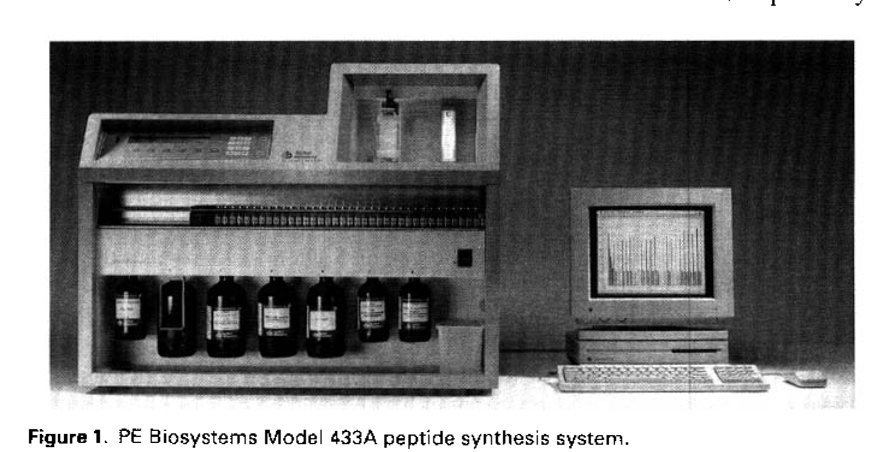
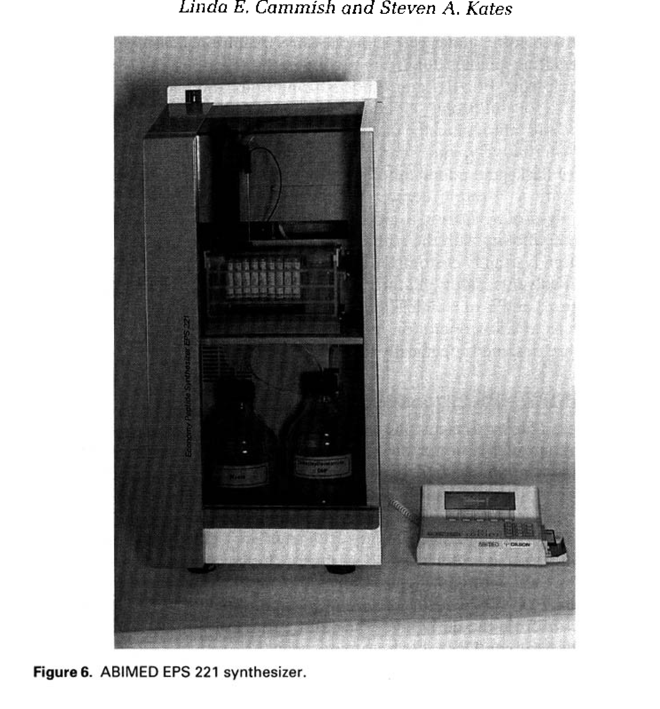
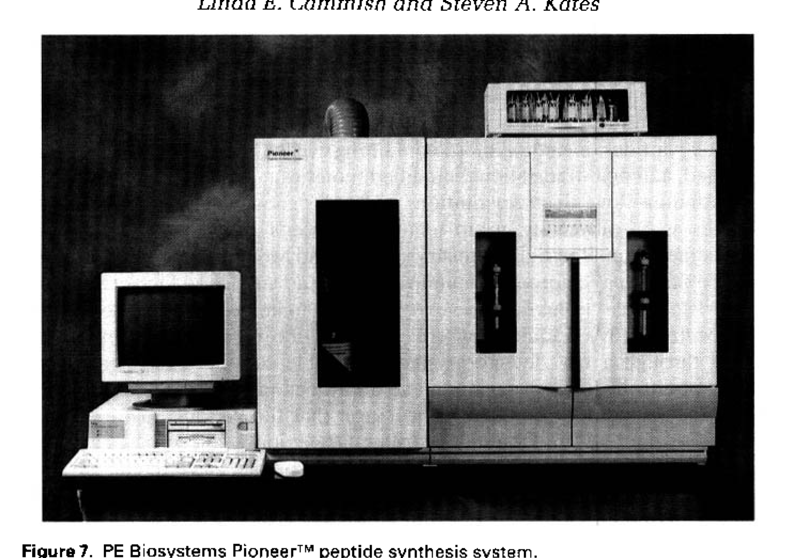
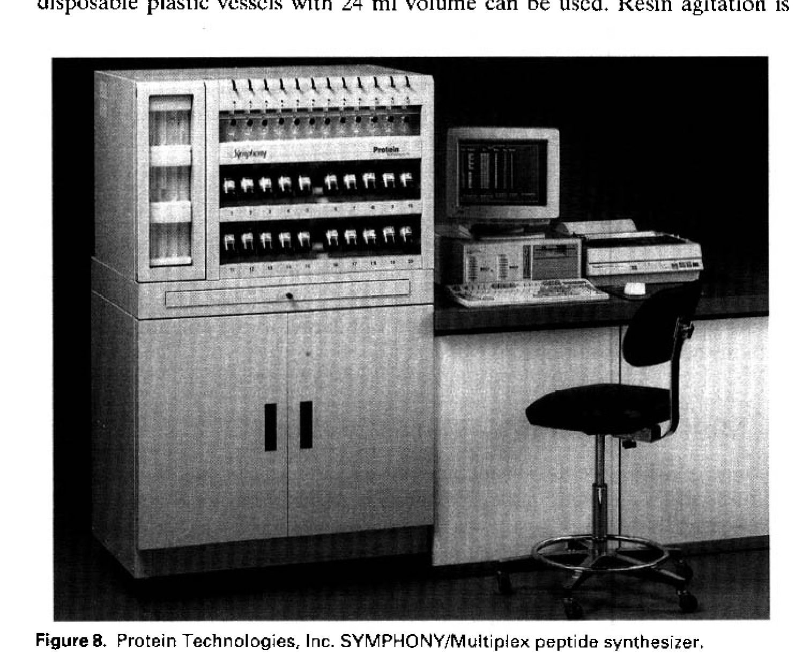

第十三章 自动化固相肽合成仪器
Instrumentation for Automated Solid Phase Peptide Synthesis
作者：Linda E. Cammish and Steven A. Kates 书页：277–302
————————————————————————————————————————
固相肽合成（SPPS）自 Merrifield 于 1963 年提出以来，经历了从纯手工操作到全自动化的漫长发展过程。早期的 SPPS 需要研究者手动完成每一个偶联循环（coupling cycle）和脱保护步骤（deprotection step），不仅耗时耗力，而且容易出现人为误差。
自动化合成仪器的出现彻底改变了这一局面。第一台商品化肽合成仪由 Beckman 公司于1960 年代后期推出，此后经过数十年的技术迭代，现代肽合成仪已经能够实现：
全自动的偶联-洗涤-脱保护循环，无需人工干预
UV 在线监测（on-line UV monitoring），实时跟踪 Fmoc 脱保护程度
反馈优化（feedback optimization），根据 UV 数据自动调整反应条件
多重合成（multiple/multiplex synthesis），同时合成多条肽
从研究级（0.01–0.25 mmol）到中试生产（>100 mmol）的全规模覆盖
本章系统介绍了目前市场上的主要自动化肽合成仪器，按照操作模式分为三大类：（1）批式合成器（batchwise synthesizers），（2）连续流合成器（continuous-flow synthesizers），以及（3）多重合成系统（multiple peptide synthesizers）。每类仪器都有其特定的应用场景和优势。
批式合成是最经典的 SPPS 操作模式。树脂在反应容器（reaction vessel, RV）中与试剂混合、反应，然后通过过滤（filtration）和洗涤（washing）去除过量试剂和副产物。批式合成器的核心优势在于：树脂可选择范围广（从 polystyrene 到 PEG-PS 均可）、反应条件灵活、易于放大。
PE Biosystems（现 Applied Biosystems）的 433A 是研究级肽合成的标杆仪器。其核心特点包括：
合成规模：0.005–1.0 mmol，适合研究级到中等规模
UV 在线监测系统：通过监测 Fmoc-deprotection 释放的 dibenzofulvene（在 301 nm 处有吸收）来实时跟踪每一步脱保护反应的完成程度
反馈控制（Feedback control）：当 UV 监测显示脱保护不完全时，仪器可自动延长反应时间或增加试剂用量，实现"智能"合成优化
氨基酸活化：采用 preloaded amino acid cartridges，支持 HBTU/HOBt 或 HATU/HOAt 活化
反应容器：可更换不同体积（从 5 mL 到 50 mL），适应不同规模
电脑控制：Windows 界面，支持自定义合成方案（custom synthesis protocols）
433A 的 UV 反馈控制是其最突出的技术优势。传统合成仪按照预设时间执行每一步反应，如果某个偶联或脱保护步骤反应较慢（例如由于空间位阻），可能导致产物不纯。433A 通过实时 UV 监测可以自动检测反应终点，确保每一步反应完全，从而大幅提高粗肽纯度和合成成功率。这一功能对于合成困难序列（difficult sequences）尤为重要。

Figure 1. PE Biosystems Model 433A 肽合成系统
433A 的典型操作流程：（1）将树脂称量后转移至反应容器；（2）在电脑上加载合成方案（sequence file）；（3）仪器自动执行脱保护-洗涤-偶联-洗涤循环；（4）UV 监测器持续记录每一步的脱保护曲线；（5）合成完成后手动收集树脂，进行裂解（cleavage）和纯化。
PS3 由 Protein Technologies, Inc.（Tucson, AZ）制造，是一款经济型研究级合成仪。其设计理念是"简单、可靠、经济"：
合成规模：0.005–0.5 mmol
氮气鼓泡搅拌（nitrogen bubbling），无需机械搅拌
三个氨基酸瓶位 + 活化试剂瓶位，适合短到中等长度肽链
结构简单，维护成本低，适合预算有限的实验室
无 UV 监测功能（这是其与 433A 的主要差距）
PS3 特别适合高校和研究所的日常肽合成需求。虽然功能较为基础，但其可靠的性能和低廉的价格使其成为入门级合成仪的首选。
SONATA 和 Pilot 是 Protein Technologies 面向中试规模（pilot scale）的合成仪：
合成规模：SONATA 可达 5–50 mmol；Pilot 可达 100+ mmol
适用于从研究开发到小批量生产的过渡阶段
配备大体积反应容器和增强的液体输送系统
支持 Fmoc 和 Boc 两种保护基策略
可选 UV 监测模块
中试合成仪在肽药物开发中扮演关键角色——当候选肽从研究阶段进入临床前研究时，需要克级到百克级的样品量，SONATA/Pilot 正好满足这一需求。
Advanced ChemTech（Louisville, KY）的 90 和 400 型号覆盖了从研究到生产的广泛范围：
Model 90：研究级，0.01–0.25 mmol，紧凑型设计
Model 400：中试到生产级，可达数十 mmol
两者共享相同的软件平台，便于方法转移（method transfer）
支持多种活化方式：DCC/HOBt、HBTU/HOBt、PyBOP 等
ABIMED（Langenfeld, Germany）的 EPS 221 是一款德国制造的高精度合成仪：
合成规模：0.01–0.25 mmol
采用注射泵（syringe pump）精确控制液体转移，精度达 μL 级
反应容器恒温控制（thermostatted reaction vessel）
特别适合需要精确化学计量（stoichiometry）的合成
模块化设计，可升级为多重合成系统

Figure 6. ABIMED EPS 221 合成仪
连续流 SPPS 与传统批式合成的根本区别在于：树脂不是在密闭容器中与试剂混合，而是装在柱（column）中，试剂和溶剂以连续流动的方式通过树脂柱。这一设计类似于色谱柱的操作模式。
Pioneer 是目前最主要的连续流肽合成仪，由 PE Biosystems 推出。其核心技术特点：
连续流模式：试剂通过 HPLC 泵连续输送通过装有树脂的柱
UV 在线监测：流动相经过柱后直接进入 UV 检测器，实时监测 Fmoc 脱保护释放的 dibenzofulvene（301 nm）
高精度反馈控制：UV 信号回到基线即表示脱保护完全，仪器自动切换到下一步骤
反应效率高：连续流保证了试剂始终处于过量状态，推动反应向完成方向进行
合成规模：0.005–0.5 mmol

Figure 7. PE Biosystems Pioneer™ 连续流肽合成系统
连续流合成的主要优势在于 UV 反馈控制的灵敏度和实时性。由于 UV 检测器直接安装在流动路径上，可以精确记录脱保护曲线（deprotection profile），提供比批式合成更精细的反应监控。
然而，连续流模式也有局限：（1）树脂选择受限——需要使用机械强度高的树脂（如 PEG-PS），因为软树脂在流动压力下可能变形或堵塞柱；（2）不适用于大颗粒树脂或膨胀率高的树脂；（3）设备成本较高。
随着组合化学（combinatorial chemistry）和高通量筛选（high-throughput screening）的兴起，同时合成大量不同序列的肽成为迫切需求。多重合成仪（multiple/multiplex peptide synthesizers）应运而生，能够同时或顺序合成数条到数百条肽。
SYMPHONY 是 Protein Technologies 推出的多重合成系统，其核心是 Multiplex™ 技术：
通道数：24 个独立反应通道
合成规模：每通道 0.005–0.05 mmol
公共步骤（洗涤、脱保护）同时执行，偶联步骤逐通道执行
可选 UV 监测（至少一个通道）
适合中等通量需求：如抗原表位作图（epitope mapping）、结构-活性关系（SAR）研究

Figure 8. Protein Technologies SYMPHONY 多重肽合成系统
Advanced ChemTech 提供了多款不同通量的多重合成仪：
Model 357：中通量，适合 10–40 条肽的平行合成
Model 348：中等规模多重合成
Model 396：高通量，可同时合成 96 条肽
所有型号共享化学试剂输送系统（common reagent delivery system），降低试剂消耗
支持从 Fmoc 到 Boc 的多种保护基策略
AMS 422 是 ABIMED 推出的高通量平行合成系统：
通量：96 通道（标准 96 孔板格式）
合成规模：每孔 1–50 μmol
平行合成：所有通道同时进行相同的步骤（脱保护、洗涤）
机器人液体处理（robotic liquid handling）：精确分配不同氨基酸到各孔
特别适合短肽（5–15 mer）的高通量合成
应用：组合肽库（combinatorial peptide libraries）、抗原表位扫描（epitope scanning）
这两款系统代表了极高通量的自动化合成：
ASP 222 Auto-Spot Robot：自动化 SPOT 法合成，直接在纤维素膜上点样合成肽阵列
ZINSSER SMPS 350：中等通量自动化合成，支持 96 孔格式
ZINSSER SOPHAS：超高通量系统，可同时处理数百到上千条肽
这些系统主要用于大规模组合库的构建和初步筛选
选择合适的肽合成仪需要综合考虑以下因素：合成通量（每天/每周需要合成多少条肽）、合成规模（每条肽需要多少 mg）、肽链长度、预算、以及是否需要 UV 监测等高级功能。
| 应用场景 | 推荐仪器 | 通量 | 规模 | 关键特性 |
|---|---|---|---|---|
| 少量研究级合成 | PE 433A / PS3 | 1–5 条/批 | 0.005–1 mmol | UV 反馈控制（433A） |
| 中等通量合成 | SYMPHONY | 24 条/批 | 0.005–0.05 mmol | Multiplex™ 技术 |
| 高通量短肽 | AMS 422 / SOPHAS | 96+ 条/批 | 1–50 μmol | 机器人液体处理 |
| 中试生产 | SONATA / Pioneer | 1–3 条/批 | 5–100 mmol | 可放大、UV 监测 |
| 连续流合成 | Pioneer | 1 条/批 | 0.005–0.5 mmol | 实时 UV 跟踪 |
以下从五个核心维度对比各类合成仪的技术指标：
低通量（1–5 条/批）：433A、PS3、EPS 221、Pioneer
中通量（12–24 条/批）：SYMPHONY、ACT 357
高通量（96+ 条/批）：AMS 422、SMPS 350、SOPHAS
微量（1–50 μmol）：AMS 422、ASP 222
研究级（0.005–1 mmol）：433A、PS3、Pioneer、EPS 221
中试级（5–100 mmol）：SONATA、ACT 400、Pilot
全自动：433A、Pioneer、SYMPHONY、AMS 422（从脱保护到偶联全自动）
半自动：PS3、EPS 221（部分步骤需手动干预）
具备 UV 反馈控制：433A、Pioneer（这是两者的核心竞争优势）
可选 UV 监测：SONATA
无 UV 监测：PS3、AMS 422、大多数多重合成仪
入门级（< $30K）：PS3
中档（$30K–$80K）：433A、EPS 221、SONATA
高档（$80K–$200K）：Pioneer、SYMPHONY
超高档（> $200K）：AMS 422、SOPHAS
现代肽合成仪分为三大类：批式合成器、连续流合成器、多重合成系统，各自适用于不同的应用场景
PE Biosystems 433A 是研究级合成的标杆，其 UV 反馈控制功能可实时监测 Fmoc 脱保护程度，自动优化反应条件
Pioneer 连续流合成器将 UV 监测发挥到极致，但对树脂类型有严格要求（需机械强度高的 PEG-PS 树脂）
多重合成仪（SYMPHONY 24 通道、AMS 422 96 通道等）可同时合成大量肽，是组合化学和高通量筛选的基础工具
选择合成仪的核心考量：通量需求 vs. 合成规模 vs. 预算。少量高纯度选 433A，高通量短肽选 AMS 422，中试生产选 SONATA
UV 在线监测是高端合成仪的标志性功能，可显著提高困难序列的合成成功率
批式合成器兼容所有类型树脂，而连续流合成器仅适用于刚性树脂——这是选择连续流系统时的重要限制因素